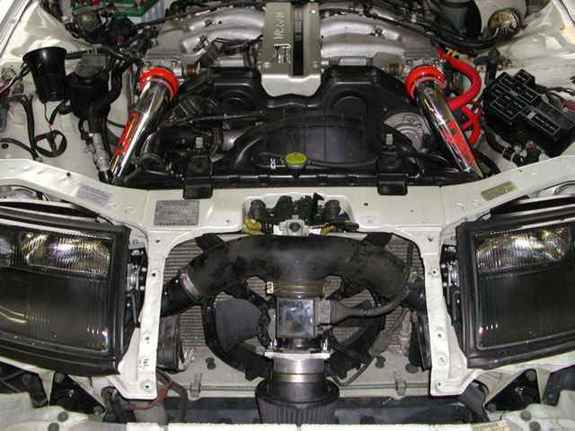

-
So I bought an unfinished Z31 project and need help on a turbo selection. According to PO it has a built 3.3 and there is paperwork to back his claim. Anyway, stock housing was machined to accept a p trim wheel so I was wondering about either a 60-1 or T67. I'd rather the car be fun to drive in the mid-range. So initially I thought the 60-1 would be the better fit but maybe with this motor the T67 would be preferable. It a 3.3 bored to 3.4, stage 3 cams, gutted intake manifold, 1mm oversize valves, port and polished intake manifolds, adjustable cam gears, etc. Doesn't seem like anything was missed as far as I can tell. -
Well strictly speaking, with those mods your mid-range will be torquey regardless of boost… so I would start at the top, how much hp would you like to squeeze out of it, and what do you want your redline to be? -
I'm not really concerned with making a dyno queen with a peaky hp number, I'd rather have as much area under the curve as possible instead. I'm not real sure about the redline…I was searching around the forum and most built motors are running around 7k so I guess that is probably the max safe redline. -
Torque won't be a problem, your torque curve will more closely resemble a turbo diesel than a ferrari engine… but the max hp will help us recommend the right size turbo that isn't needlessly large
To give you an idea, a normal 9:1 vg33 with a holset hx35 at fairly high boost (normal for a holset mind you), should be able to get you into the 350hp/420tq range -
Sorry for being such a newb…I'm reading the faqs and browsing thru the forum to try and get up to speed. Since tq won't really be an issue, how far can I safely go on pump gas? I read about the fuel pump, maf and injectors being limitations. The maf and fuel pump were replaced with z32 tt units and the injectors are rx7 680cc. Would 400hp be feasible? -
What's pump gas to you? 680cc should be fine into the 600hp range with premium, but the z32 afm won't go much past 450hp, and the z32 pump might run out of steam before then too -
This is incorrect. Felix (z31t) made 709whp with a Z31 ECU that was Nistuned, HUGE injectors and a Z32 MAF. The stock Z31 MAF can pull off almost 450whp if you do some scaling.G-E;n767373 wrote: What's pump gas to you? 680cc should be fine into the 600hp range with premium, but the z32 afm won't go much past 450hp, and the z32 pump might run out of steam before then too
Stock Z32TT fuel pump is 260lph btw- VG30DET (HE341) 86 300ZX - 1982 280ZX Turbo - Headered NA 1986 300ZX 2+2 - 2000 Xterra - -
Wasn't Felix running E85 though? I know that you need more of it to make similar power to pump, but it's safer? I've never really looked into the benefit of E85 compared to pump, and why people make the switch in the first place. Is it just safer from a tuning perspective?
Build thread http://z31performance.com/showthread…-Paint-done-eh -
Well that is only "incorrect" if nistune is incorrect, and if he indeed made 700hp using the z32 element, I'm sure it was installed in a larger pipe, ie. the metering was rescaledmichaelp;n767394 wrote:
This is incorrect. Felix (z31t) made 709whp with a Z31 ECU that was Nistuned, HUGE injectors and a Z32 MAF. The stock Z31 MAF can pull off almost 450whp if you do some scaling.
Stock Z32TT fuel pump is 260lph btw -
Stock MAF housing,.G-E;n767417 wrote:
Well that is only "incorrect" if nistune is incorrect, and if he indeed made 700hp using the z32 element, I'm sure it was installed in a larger pipe, ie. the metering was rescaled
But assuming stuff with no actual knowledge and experience is what you do best
Consider the fact that there are numerous 600+whp Z32TTs running on stock MAFs and ECUs that have been retuned.- VG30DET (HE341) 86 300ZX - 1982 280ZX Turbo - Headered NA 1986 300ZX 2+2 - 2000 Xterra - -
From his build thread, page 6 near the bottom ish.z31t;n360273 wrote: Re: Z31t Drag/Street Car. New build Pg. 4
I'll go back with a stock set of gaskets but im gonna put some headstuds in it for sure. I wish it would have seen the track on this power level though, it was running the 6.70s with only 600whp. Either way fuel system is setup now and runs great and my z32 airmass was still not maxxed out at 700whp, nobody believes this car is still on a nistuned ecu with a distributor.
Build thread http://z31performance.com/showthread…-Paint-done-eh -
You also know damn well z32's measure half the airflow with separate intakes… so in that case the limit is far highermichaelp;n767428 wrote:
Consider the fact that there are numerous 600+whp Z32TTs running on stock MAFs and ECUs that have been retuned.
So how do you get 650hp out of it? -
Having owned multiple Z32s, I will inform you now, once, that Z32s Y the intake into 1 through the MAF. Only aftermarket intake setups with retunes can use the MAF on only one bank…and its inaccurate.G-E;n767458 wrote:
You also know damn well z32's measure half the airflow with separate intakes… so in that case the limit is far higher
So how do you get 650hp out of it?
Nice try though. Another ignorant statement made with zero experience or knowledge of the situation.
- VG30DET (HE341) 86 300ZX - 1982 280ZX Turbo - Headered NA 1986 300ZX 2+2 - 2000 Xterra - -
Guess you gotta tell this guy he's wrong too
http://redz31.suomiz.net/pages/fuel/afmcrap.html
…and this guy
http://www.paulr33.com/diagrams/airf…er-wiring.html
…and these guys
http://www.frsport.com/index.php?tar…roduct_id=1250 -
G-E;n767496 wrote: Guess you gotta tell this guy he's wrong too
http://redz31.suomiz.net/pages/fuel/afmcrap.html
…and this guy
http://www.paulr33.com/diagrams/airf…er-wiring.html
…and these guys
http://www.frsport.com/index.php?tar…roduct_id=1250
Im confused by your argument here. they're wrong about what? that the Z32/J30 etc. MAF is a 0-5V scale, instead of the 2-7v like the Z31's? Also - from the Z32's Ive worked on, and information I have dug up/ seen posted. Michaelp is correct. plus - wanted to note my brother's Z31 is running great on a Z32 or a J30 MAF currently on a nistuned '86 ( I think) ECU.Damn dirty angels....these cars!
Current Daily Driver - 86 Turbo.
Under the cover - THE BANANA… that needs to be re-energized.
sigpic

Copyright © 2006–. All rights reserved. Privacy Policy